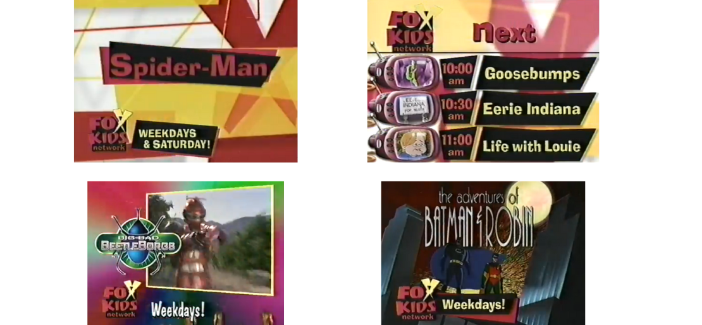
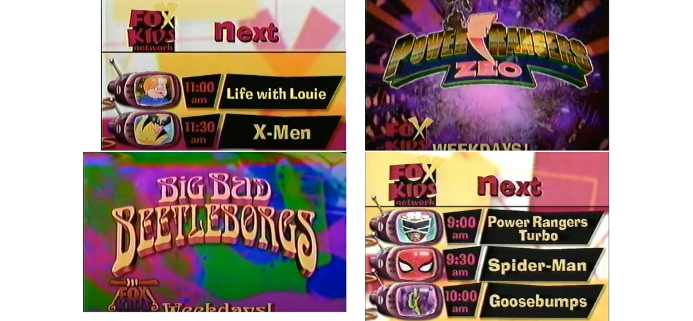

Fox Kids Flashback! How It All Started (Part 1)

1992 was a defining moment for Fox Kids, as it not only aired Season 3 of Tiny Toons, but also debuted two shows that would become household names among action-adventure series. The first was Batman: The Animated Series, which has been lauded as one of the best Dark Knight adaptations due to its dramatic tone and portrayal of the titular hero and his rogue gallery. The second show was X-Men, from rival publishing company Marvel, which was greenlit in part because Fox Kids executive Margaret Loesch preferred it, having oversaw production of the Pryde of the X-Men pilot in 1990, which was never ordered to series.
Two new shows debuted on Fox Kids in 1993, helping the programming block to become the highest rated among family audiences. The first, Animaniacs (created by the same team as Tiny Toons), became the most watched animated comedy series. The second, Mighty Morphin Power Rangers, became Fox Kids' highest-rated show and spanned one of television's most profitable and longest franchises. With the release of Spider-Man: The Animated Series and Goosebumps (based on R.L. Stine's books, also one of the most popular horror series of its time) in 1994 and 1995, Fox Kids' leadership was undeniable. Fox Kids also made its debut as a programming block on Fox Latin America (though without the Warner Bros. produced shows).
Reasons for Fox Kids' decline in the United States

The decline of Fox Kids in the United States is the result of three distinct events that affected various levels of programming and distribution. The first occurred in 1994, when Fox Network reached an agreement with New World Communications (of which Marvel was a part), which owned several independent television stations that would later become part of Fox in 1996. Beginning in 1996, News Corporation, Fox's new owner, mandated that the network focus on news and sports rather than family programming. As a result, Fox began licensing the Fox Kids programming block in markets where Fox affiliate networks refused to air it.
In second place, Fox's success as a broadcast television network partially managed by a movie studio prompted rival companies from 20th Century Fox to enter the market. Warner Bros. established The WB in 1995, while Disney acquired ABC Network in 1996. Both companies witnessed how Fox Kids dominated the family programming market in broadcast television and decided to have their own proposals.
The WB launched Kids' WB less than a year after its debut as a network, featuring past Warner Bros. Animation series (Taz-Mania and Tiny Toons), new shows from the studio (Pinky and the Brain, Freakazoid, Superman: The Animated Series), but most importantly new episodes of Animaniacs and Batman: The Animated Series, which were some of the highlights of Fox Kids programming slate. ABC (owned by Disney since 1996) also responded to Fox Kids by launching Disney's One Saturday Morning, which featured shows such as 101 Dalmatians, Recess, Pepper Ann and Doug.
By this point, Fox Kids' most popular shows were X-Men, Spider-Man, and Power Rangers, which were later joined by Beetleborgs (another Saban adaptation of a Japanese tokusatsu same as Power Rangers). Fox Kids was relegated to less competitive timeslots in markets where The WB aired it. As a result, Fox Kids' audience leadership in kids and family field was lost. The third factor that contributed to Fox Kids' decline was its internationalization. In 1995, Australian cable operator Foxtel (owned by News Corporation) launched the world's first Fox Kids Network in Australia.
News Corporations demonstrated an interest in the potential of international paid television by entering into an agreement with Saban Entertainment to launch more Fox Kids channels around the world. Saban became the company's largest content provider after Warner Bros Animation parted ways with Fox Kids. In 1996, Saban's production company merged with Fox Children's Production to form Fox Kids Worldwide, which would oversee the brand globally.
Fox Kids Worldwide acquired The Family Channel in 1997, renaming it Fox Family Channel, with the goal of competing with the domains of Nickelodeon and Cartoon Network in the United States paid-tv field. This channel was sold due to its low audience and profitability, which made it difficult to compete with the networks mentioned above.
The decadence of Fox Kids in the United States in comparison to their success in Latin America and Europe

Things got worse after Margaret Loesch left Fox Kids. By the time Saban took over the programming block, they had made numerous mistakes with timeslots and given little advertising to new shows, which had a negative impact on them. These erratic decisions harmed series like Adventures of Sam and Max, Silver Surfer, Ninja Turtles: Next Mutation, Mystic Knights of Tir Na Nog, Space Goofs and Oggy and The Coackroaches.
X-Men: The Animated Series ended in 1997, Spider-Man and Goosebumps in 1998, leaving only Power Rangers to win in its time slot.
In 1999, Kids WB premiered Pokémon (in collaboration with Nintendo and 4Kids Entertainment), a Japanese anime that would be the nightmare of its competitors. Pokémon became a global phenomenon, allowing Japanese productions to enter the American market at a lower cost than producing their own shows. As a result, Dragon Ball Z and Sailor Moon were aired on Cartoon Network's Toonami programming block. Fox Kids counterprogrammed with the broadcast of Digimon, which was a huge success, much to the relief of the executives.
However, the block's problems persisted as many shows lost to Pokémon, including Spider-Man: Unlimited, Avengers: United They Stand, Transformers: Beast Machines, and Monster Rancher. The failure of the Marvel series caused the company to terminate their contract with Saban, resulting in the cancellation of Captain America and Daredevil, both of which were in production. The only new show to be renewed for a season was The New Adventures of Woody the Woodpecker, which performed better on Fox Family.
By the turn of the millennium, Fox Kids' ratings had plummeted to the point where some of the remaining stations that carried the block replaced it with another owned by Disney. Furthermore, Saban and News Corporation had opposing creative ideas for the block. While the first preferred modern programming to compete with Cartoon Network and Nickelodeon, the second advocated for a more family-friendly tone. When it comes to the Fox Kids International Channels, they were launched with shows from a variety of companies, including De Patie-Freleng, Marvel, New World, DIC, and Saban. They radically changed their strategy in 1999, and instead of replicating what was being programmed in the United States, they decided to pursue a much more radical focus while maintaining their identity.
The Latin American Fox Kids prioritized action and comedy series while also cultivating strategic alliances with distributors such as Televix, Sony, and Cloverway. In the action series field, Fox Kids Latin America made good use of the Marvel catalogue, making them a network synonym and extending the popularity of shows like X-Men, Spider-Man, and Hulk. Power Rangers would remain the network's cornerstone, with previous seasons of the show airing on weekends (along with sister series Masked Rider, Beetleborgs, VR Troopers, and Ninja Turtles).
The channel also capitalized on the Japanese animation boom, importing the block "Anime Invasion," which featured action and adventure shows such as Beyblade, Transformers: Car Robots, Medabots, Monster Rancher, Dinozaurs, Patlabor, Shinzo, Shaman King, but most notably Digimon (for which Fox Kids acquired global rights), which became one of the network's highlights, alongside Marvel and Power Rangers. Although not as prolific as action or anime, the comedy genre featured shows such as The New Woody Woodpecker Show, The New Addams Family Show, Oggy and the Cockroaches, Angela Anaconda, and anime series Shin-Chan and Toonde Burin. Fox Kids Network Latin America also experimented with late-night programming by airing Goosebumps and "Midnight Classics," which featured some of Marvel's classic series as well as the original Woody Woodpecker show. In a short period of time, the network surpassed Nickelodeon's ratings and competed with Cartoon Network, which retained the top spot in the children's ratings. Fox Kids had future plans, such as acquiring the Japanese anime Yu-Gi-Oh!, which Nickelodeon later won.
Fox Kids Europe has also strengthened its position among children's networks by adding anime series such as Pokémon, Dragon Ball, and Hamtaro. Another significant development was the establishment of the Fox Kids World Cup, a children's soccer tournament. Due to its success, it was replicated in Latin America. Unfortunately, Saban and News Corporation underestimated Fox Kids' international success.
-> Part 2 ← Volver a artículos